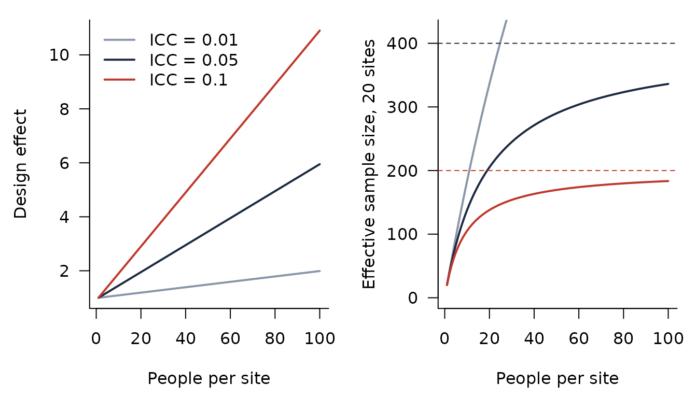
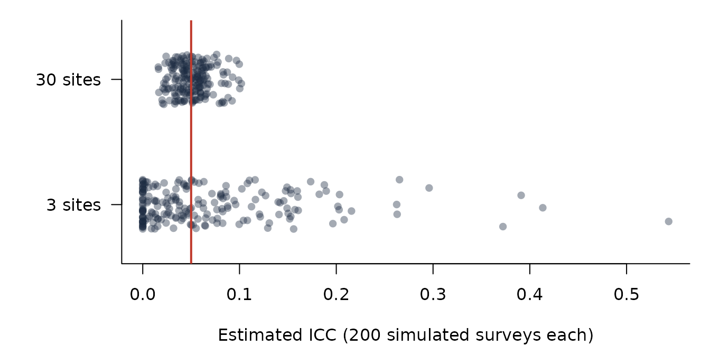

Clustering, ICC and the design effect
Source:vignettes/articles/concept-clustering.Rmd
concept-clustering.RmdMost surveillance studies do not sample people at random from a whole country. They choose a set of sites, such as health facilities, villages or schools, and test a number of people at each. This article explains why that matters for sample size, how MMSpower allows for it, and what to do about the intra-cluster correlation (ICC) that drives it.
Why people at the same site resemble each other
People at the same site share a lot: the same mosquitoes, the same health facility, the same drug supply and the same parasite population. So the prevalence of infection, or of a resistance marker, varies from site to site, and people within a site are more alike than people from different sites. Once you have tested 50 people at a site, the 51st person tells you less than someone from a new site would, because you already have a good idea of the prevalence at that site.
The ICC
The intra-cluster correlation (, or ICC) measures how alike people at the same site are. It is the share of the total variation that is due to differences between sites:
- : sites do not differ; people are effectively independent.
- : everyone at a site has the same result; one person per site tells you everything about that site.
In malaria surveys ICCs are usually small, often between 0.01 and 0.2, but even a small ICC matters when many people are sampled per site.
The design effect and effective sample size
With people per site, the Kish (1965) design effect is
It is the factor by which clustering inflates the variance compared with a simple random sample of the same size. Equivalently, clustered people carry the same information as
independent people, the effective sample size. With an ICC of 0.05 and 20 people per site, , so 400 people are worth about 205 independent people.
The design functions work this way round: they find the number of independent people needed, , and then scale it up by the design effect.
design_precision(prevalence = 0.3, moe = 0.05)
#> $n
#> [1] 341
#>
#> $n_sites
#> NULL
#>
#> $n_per_site
#> NULL
#>
#> $deff
#> [1] 1
#>
#> $n_eff
#> [1] 341
#>
#> $moe
#> [1] 0.04993769
design_precision(prevalence = 0.3, moe = 0.05, n_per_site = 20, icc = 0.05)
#> $n
#> [1] 680
#>
#> $n_sites
#> [1] 34
#>
#> $n_per_site
#> [1] 20
#>
#> $deff
#> [1] 1.95
#>
#> $n_eff
#> [1] 341
#>
#> $moe
#> [1] 0.04936963The n_eff element is the same, 341, in both: that is the
information needed. The clustered design needs more people to supply
it.
Each site is worth at most 1 / ICC people
Write the effective sample size of sites of people each as
As grows, this rises towards but never reaches it. However many people you test at a site, it is worth at most independent people: 20 with an ICC of 0.05, 10 with an ICC of 0.1.
This puts a ceiling on what a fixed number of sites can achieve. The precision example above needs 341 independent people. With 10 sites and an ICC of 0.05, the most those sites can supply is , so no number of people per site is enough:
design_precision(prevalence = 0.3, moe = 0.05, n_sites = 10, icc = 0.05)
#> Error:
#> ! Target MOE of 5.0% is unachievable with 10 sites and ICC = 0.050; the minimum achievable MOE is 6.6%.The error reports the best margin of error that 10 sites can reach.
When a solution does exist, solving
with
gives the closed form used by design_precision(),
which needs . Checking it by hand with 50 sites, using the Wald formula for (the default Clopper-Pearson sizing finds by a numerical search instead, then applies the same step):
n0 <- qnorm(0.975)^2 * 0.3 * 0.7 / 0.05^2
k <- 50
n0 * k * (1 - 0.05) / (k - n0 * 0.05)
#> [1] 452.5919
design_precision(prevalence = 0.3, moe = 0.05, n_sites = 50, icc = 0.05,
ci_method = "wald")
#> $n
#> [1] 500
#>
#> $n_sites
#> [1] 50
#>
#> $n_per_site
#> [1] 10
#>
#> $deff
#> [1] 1.45
#>
#> $n_eff
#> [1] 323
#>
#> $moe
#> [1] 0.04836784The function rounds the number of people per site up, so its
n is the number actually sampled. The same ceiling applies
to design_threshold() and design_difference():
with a fixed number of sites there is a limit on the power you can
reach.
Two design choices
The design functions let you fix one of two things.
-
Fix the people per site (
n_per_site) and solve for the number of sites. The design effect is then known in advance, and the answer always exists. -
Fix the number of sites (
n_sites) and solve for people per site. This suits studies where sites are already chosen, for example sentinel sites, but can hit the ceiling above.
The plots show why adding people per site gives diminishing returns. On the left is the design effect; on the right the effective sample size from 20 sites, with the ceiling dashed.
m <- 1:100
iccs <- c(0.01, 0.05, 0.1)
cols <- c("#8A96A8", "#1B2A41", "#C0392B")
par(mfrow = c(1, 2), mar = c(4.5, 4.5, 1, 1), las = 1, bty = "l")
plot(NA, xlim = range(m), ylim = c(1, 1 + 99 * max(iccs)),
xlab = "People per site", ylab = "Design effect")
for (i in seq_along(iccs)) lines(m, 1 + (m - 1) * iccs[i], col = cols[i], lwd = 2)
legend("topleft", bty = "n", lwd = 2, col = cols,
legend = paste("ICC =", iccs))
plot(NA, xlim = range(m), ylim = c(0, 20 / 0.05 * 1.05),
xlab = "People per site", ylab = "Effective sample size, 20 sites")
for (i in seq_along(iccs)) {
lines(m, 20 * m / (1 + (m - 1) * iccs[i]), col = cols[i], lwd = 2)
abline(h = 20 / iccs[i], col = cols[i], lty = 2)
}
With an ICC of 0.05, going from 10 to 50 people per site multiplies
the people tested by 5 but the effective sample size only by 2.1. When
travel to a site costs much more than testing an extra person there, a
few large sites may still be cheapest (see
estimate_cost()), but for a given number of people,
spreading them over more sites always gives more information.
Estimating the ICC from data
estimate_prevalence() estimates the ICC from the data if
you do not supply one (icc = NULL, the default). It
compares the variation of the site prevalences with the variation
expected if everyone were independent, and converts the ratio into an
ICC using the Kish formula (with the harmonic mean site size, which is
the right average when sites differ in size).
To see how reliable this is, we simulate surveys where the true ICC is known. Site prevalences are drawn from a beta distribution with mean and ICC ; for such a beta, , so and . Each site then has 50 people tested.
simulate_icc <- function(n_sites, prev = 0.3, icc = 0.05, n_per_site = 50) {
ab <- (1 - icc) / icc
p_site <- rbeta(n_sites, prev * ab, (1 - prev) * ab)
x <- rbinom(n_sites, n_per_site, p_site)
estimate_prevalence(x, rep(n_per_site, n_sites))$icc
}
set.seed(42)
icc_3 <- replicate(200, simulate_icc(3))
icc_30 <- replicate(200, simulate_icc(30))
par(mar = c(4.5, 6, 1, 1), las = 1, bty = "l")
stripchart(list("3 sites" = icc_3, "30 sites" = icc_30), method = "jitter",
jitter = 0.2, pch = 16, col = adjustcolor("#1B2A41", 0.4),
xlab = "Estimated ICC (200 simulated surveys each)")
abline(v = 0.05, col = "#C0392B", lwd = 2)
The red line is the true ICC of 0.05. With 30 sites the estimates
cluster around it: 80% fall between 0.03 and 0.077. With 3 sites they
range from 0 to 0.54, and 18% of surveys estimate an ICC of exactly 0,
which would treat the people as independent.
estimate_prevalence() allows for this uncertainty: when it
estimates the ICC, it widens the interval according to the number of
sites (df, the number of sites minus one), so that
intervals keep close to their stated coverage even with few sites. In
the simulations reported in ?estimate_prevalence (true ICC
0.1, 50 people per site, prevalence 0.3), the 95% Clopper-Pearson
interval contained the true prevalence 99% of the time with 3 sites, 96%
with 5, and 95 to 96% with 10 or more. The price is width: with 3 sites
the interval is very wide, an honest picture of how little 3 sites can
say about clustering.
Practical advice
- At the design stage, there is no data to estimate from, so you must supply an ICC. Take it from previous surveys of the same outcome in a similar setting, and try a range of values to see how sensitive the answer is.
- At the analysis stage, with many sites (say 20 or more) the estimated ICC is reasonable. With only a few sites the estimate is unreliable and the resulting interval very wide; a cautious ICC from previous studies usually gives a more useful answer. Report which value was used.
-
Do not set
icc = 0for clustered data unless you have good reason to think sites do not differ. - More sites beat more people per site. If the precision or power you need is out of reach, adding sites is usually the only remedy.
Kish L (1965). Survey Sampling. Wiley.